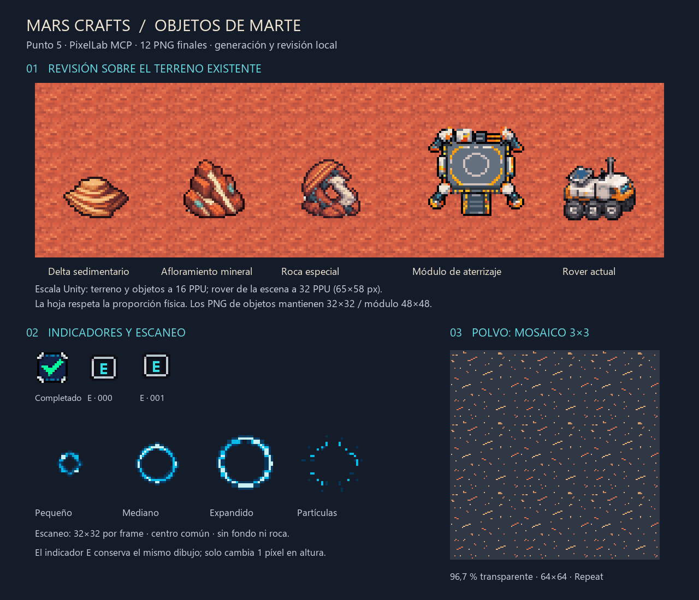
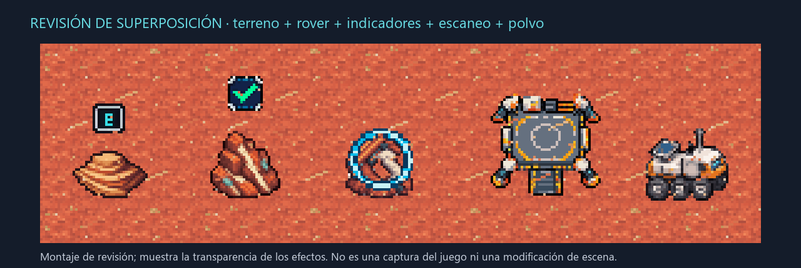

12 PNG independientes. La hoja compara la escala física con el rover actualmente conectado en la escena. Las animaciones siguientes muestran los frames entregados.
2 frames · desplazamiento de 1 px
4 frames · expansión y dispersión
Textura 64×64 · desplazamiento de muestra


El HTML es una revisión de recursos. Las escenas y los sistemas científicos permanecen intactos; conexión y prueba en Unity pendientes.